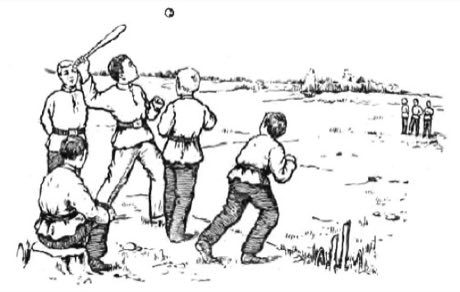
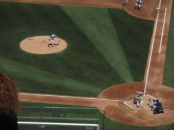
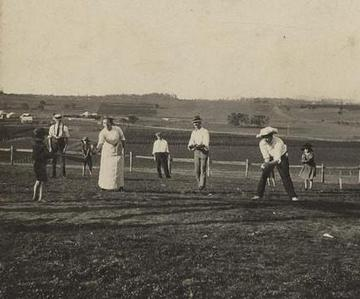
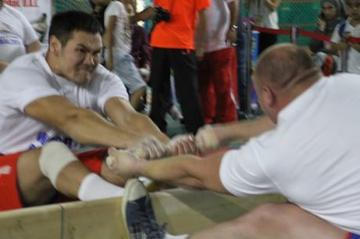

Home / Modern Heritage / Northern and Eastern Europe
Encyclopedia ID 375
Lapta
Also known as Лапта · Russian bat-and-run


A thrower serves the ball, the batter hits it with a short flat bat and runs to the far line and back before fielders can hit them with the ball.
Heritage note
Part of the living heritage of Russia.
Origins
Usually placed in the era of Modern Heritage (1800 to today), although its exact origins are uncertain, within the cultural world of Northern and Eastern Europe.
Play it
Sources
Related entries

Pesapallo
Finland · Racing

Four Corners
Cuba · Street and playground games
Rounders
Guyana · Street and playground games
More from Russia


Khokhloma Pattern Painting
Russia · Crafts and makingPlay preview · in the Paper & Paint of the World app
Khomus
Russia · Musical instruments
Kurai
Russia · Musical instruments